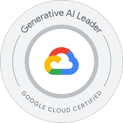
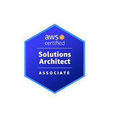

Deli Zhang
你好，我是张得力（Deli Zhang），一名专注于云计算与 AI 解决方案的架构师，拥有 15+ 年互联网基础设施与云计算领域经验。
长期深耕 AWS、Google Cloud、Microsoft Azure 等主流公有云平台，具备企业级多云架构设计、云基础设施规划、容器平台建设、技术咨询及项目交付经验。
近年来持续关注企业级 AI 技术落地，深入探索 Google Cloud AI 生态、Vertex AI、Gemini、LLM 应用及 AI Agent，具备从云基础设施到 AI 应用架构的综合技术视野。
擅长从业务场景和实际技术问题出发，完成技术分析、架构设计、解决方案制定与落地交付，帮助企业构建稳定、高效、可扩展的云与 AI 基础设施。
工作经历
-
2024-至今
全球云服务代理商 · 解决方案架构师
负责大型企业客户的公有云与 AI 技术咨询、解决方案设计及项目交付，覆盖 AWS、Google Cloud、Microsoft Azure 等多云平台。
- 多云架构设计：基于企业业务需求，规划云基础设施、网络、计算、存储、容器及安全架构。
- 企业云解决方案：参与企业级 Landing Zone、云迁移、基础设施治理及云资源优化项目。
- AI 技术落地：围绕 Google Cloud AI 生态，探索 Vertex AI、Gemini、LLM 及企业级 AI 应用场景。
- 技术咨询与售前：参与客户需求分析、技术交流、架构设计及解决方案制定。
- 项目交付与技术支持：负责复杂云环境问题分析、疑难故障排查及关键项目技术实施。
-
2022-2024 (2年)
上海天弥数码科技（IGG 集团）· 云架构师
负责集团多云基础设施架构设计与建设，推动云资源治理、成本优化及 AI 应用落地。
- 从 0 到 1 规划 AWS / GCP / Azure 多云架构及跨云网络体系，支撑全球业务基础设施建设。
- 建立云资源治理与成本优化机制，平均每年节约约 100 万美元云资源成本。
- 规划与建设容器云平台（EKS / GKE）、大数据平台（Doris / Hadoop / BigQuery）。
- 推动云平台安全体系、基础设施标准化及资源管理体系建设。
- 参与企业 AI 应用与 AIGC 平台建设，推动生成式 AI 技术在游戏研发场景中的应用。
-
2020-2022 (1年9个月)
上海大微互联网科技 · 运维经理
规划运维体系与自动化平台建设（GitLab / Jenkins / Jira CI/CD），监控平台与信息安全加固，阿里云与 IDC 混合架构落地，团队梯队建设。
-
2017-2020 (2年7个月)
平安银行金融服务（上海）· 运维架构师
制定操作系统与中间件安全基线规范，搭建 Pafa5 管控平台与自动化运维体系，负责 9 家代理行信用卡平台系统，通过等保三级认证，达到银行 SLA 服务级别标准。
-
2014-2017 (3年1个月)
我厨（上海）科技 · 运维负责人
主导业务从 IDC 全量迁移阿里云，负责阿里云架构与私有云（ZStack + KVM）建设，监控日志体系与 Docker 微服务改造。
-
2013-2014 (1年2个月)
惠生通讯（Wison 集团）· 高级运维工程师
IDC 机房建设规划，Linux 服务器运维与自动化脚本编写，电信系统应急故障远程处理与协议分析。
-
2008-2013 (4年8个月)
中兴通讯（ZTE）· 运维工程师
中兴服务器及通讯设备调试开通，Linux 系统运维与数据迁移割接，售前技术分析支持。
项目经验
-
2023年6月
IGG AI 智能问答系统
以游戏为主题的 AI 知识库项目：对 GPT-4、PaLM2、Claude2、Llama2 全面评估后选型 Azure OpenAI GPT-4 作为底座，完成模型部署、配置管理与上线发布。
-
2023年5月
AIGC 训练平台建设
基于 AWS All-In-One AI 方案为美术团队搭建智能训练平台：SD WebUI 对接 SageMaker，训练模型存储于 S3，编写文档并组织培训。
-
2023年4月
GKE 部署 Stable Diffusion 出图平台
使用 GKE、Agones 与 Filestore 在 GCP 云端构建 Stable Diffusion 出图平台，利用云端 GPU 算力实现快速高效生图。
-
2022年7月
EMR on EKS Fargate 大数据 Serverless 架构
基于 Serverless 无服务器技术运行大数据任务，任务完成后云资源自动释放，架构方案已交付生产使用。
-
2022年2月
IGG 云端安全优化
防火墙申请流程规范化，Linux / 中间件 / 数据库安全基线落地，Web 应用防火墙（WAF）防护，云账号开启 MFA。
-
2021年3月
大微 ATES 自动化运维平台建设
整合 GitLab、Jumpserver、Zabbix、Jenkins、Jira、Nacos 与 YApi 搭建一体化运维平台，效率提升约 80%；搭建 Fluentd + Elasticsearch + Kibana 日志平台，系统安全加固开启 2FA。
-
2018年6月
平安银行 Linux 与中间件基线规范化
9 家代理行操作系统基线标准化与中间件基线规范化，完成 RocketMQ、Redis、Nginx、Weblogic 等中间件集群部署，通过等保三级认证。
-
2017年11月
平安银行运维平台部署及运维
搭建代理行管控平台 Pafa5、监控（Zabbix / Grafana + InfluxDB）、代码与项目管理（GitLab / Jira）、自动化发布（Ansible / Jenkins）与 ELK 日志平台。
-
2016年1月
我厨 IDC 业务全量迁移阿里云
设计阿里云电商架构并制定迁移方案，搭建预演环境完成迁移测试，保障数据库与业务代码平滑迁移、业务连续稳定。
技术能力
-
云
AWS / Google Cloud / Azure多云架构设计Landing Zone云迁移与治理
-
AI
Vertex AIGeminiAzure OpenAISageMakerRAGAI AgentLLM 应用架构Prompt EngineeringStable Diffusion
-
容器
GKE / EKS / AKSGPU 调度AI Workload
-
数据
BigQueryDorisHadoopEMR on EKSServerless 大数据
-
网络与安全
跨云网络云安全基线IAM / MFAWAF
-
运维
FinOps可观测性（Zabbix / Prometheus / Grafana / ELK）稳定性建设CI/CD（Jenkins / GitLab）Ansible
教育经历
-
2010-2013
上海交通大学 · 计算机科学与技术（本科）
-
2006-2009
上海交通大学 · 计算机及应用（专科）
专业认证
Professional Cloud Architect
Google Cloud Certified

Generative AI Leader
Google Cloud Certified

Solutions Architect - Associate
AWS Certified